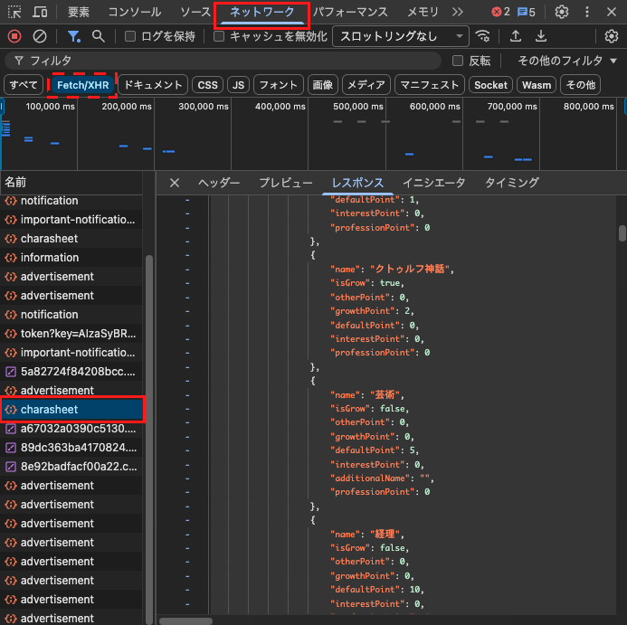
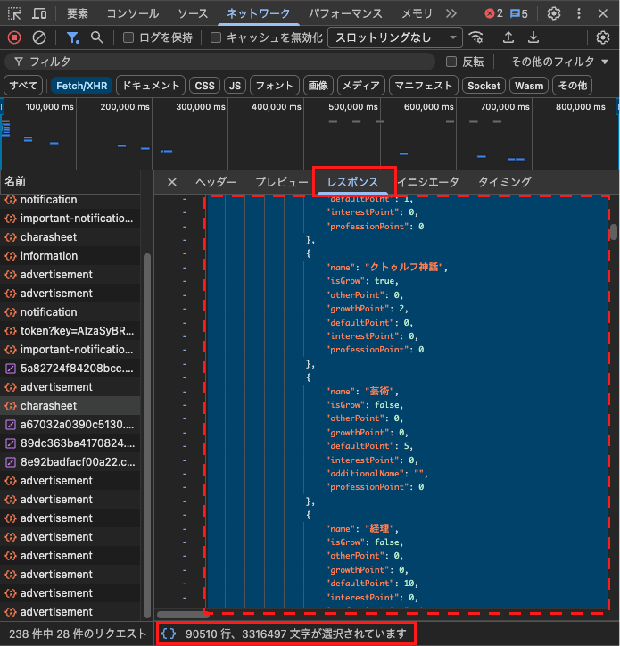

Call of Cthulhu ✦探索者名簿✦
✦探索者名簿✦
データなし
✦ いあきゃらからJSONを取得する方法
1.
iachara.com でマイページを開き、F12 で開発者ツールを起動する
2.
ネットワーク タブを選択し、画面を更新する
Fetch/XHR ボタンを押してフィルタを掛けると探しやすい
3.
リストに表示された charasheet を選択し、レスポンス タブを開いてJSONが表示されていることを確認する
charasheet が2つ表示される場合がありますが、どちらを選んでも同じデータが取得できます

4.
レスポンスタブ内の任意の場所をクリックしてから、Ctrl + A で全選択して Ctrl + C でコピーする
画面下部に「○○ 行、○○ 文字が選択されています」と表示されれば成功

5.
コピーしたJSONを右のテキストエリアに貼り付け、「読み込む」をクリック
データはブラウザのlocalStorageに自動保存されます。次回以降は貼り付け不要です。
JSONを貼り付けてください
キャラクターデータ（配列またはオブジェクト）を
テキストエリアに貼り付けてパースします
テキストエリアに貼り付けてパースします